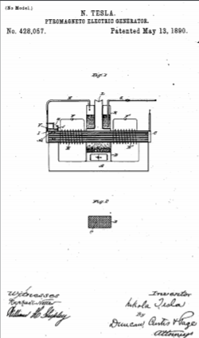
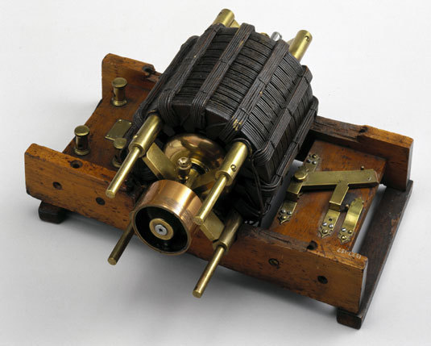

Descarga la patente original en esté enlace



Que se sepa que yo, NIKOLA TESLA , un súbdito del Emperador de Austria Hungría, de Smiljan, Lika, país fronterizo de Austria-Hungría, que reside en Nueva York, en el condado y el estado de Nueva York, he inventado ciertos Nuevas y útiles Mejoras en Generadores Eléctricos, de las cuales se detalla a continuación.
Esta solicitud es una división de una solicitud presentada por mí el 26 de mayo de 1887, número de serie 239,481.
Esta invención es una forma mejorada de generador eléctrico basada en las siguientes leyes bien conocidas: Primero, que la electricidad o energía eléctrica se desarrolla en cualquier cuerpo conductor sometiendo dicho cuerpo a una influencia magnética variable y, segundo, que las propiedades magnéticas de hierro u otra sustancia magnética se puede destruir parcial o totalmente o hacer que desaparezca al elevarla a una cierta temperatura, pero se puede restaurar y hacer que reaparezca bajando nuevamente su temperatura hasta cierto grado. Estas leyes se pueden aplicar en la producción de corrientes eléctricas de muchas maneras, cuyo principio es en todos los casos el mismo, es decir, someter un conductor a una influencia magnética variable, produciendo tales variaciones por la aplicación de calor, o, más estrictamente hablando, por la aplicación o acción de una temperatura variable sobre la fuente del magnetismo. Este principio de funcionamiento puede ilustrarse mediante un experimento sencillo: coloque de un extremo a otro, y preferiblemente en contacto real, una barra de acero permanentemente magnetizada y una tira o barra de hierro dulce. Alrededor del extremo de la barra o placa de hierro enrolle una bobina de alambre aislado. Luego aplique a la plancha entre la bobina y la barra de acero una llama u otra fuente de calor que sea capaz de elevar esa parte de la plancha a un rojo anaranjado, o una temperatura de aproximadamente 600 ° centígrados. Cuando se alcanza esta condición, el hierro pierde algo repentinamente sus propiedades magnéticas, si es muy delgado, y se producen los mismos efectos como si el hierro se hubiera alejado del imán o se hubiera eliminado la sección calentada. Este cambio de condición, sin embargo, se acompaña de un desplazamiento de las líneas magnéticas, o, en otras palabras, de una variación en la influencia magnética a la que está expuesta la bobina, y el resultado es una corriente en la bobina. Luego retire la llama o de cualquier otra forma reduzca la temperatura de la plancha. La bajada de su temperatura va acompañada de un retorno de sus propiedades magnéticas, y se produce otro cambio de condiciones magnéticas, acompañado de una corriente en dirección opuesta en la bobina. La misma operación puede repetirse indefinidamente, siendo el efecto sobre la bobina similar al que se produciría al mover la barra magnetizada hacia y desde el extremo de la barra o placa de hierro. Luego retire la llama o de cualquier otra forma reduzca la temperatura de la plancha. La bajada de su temperatura va acompañada de un retorno de sus propiedades magnéticas, y se produce otro cambio de condiciones magnéticas, acompañado de una corriente en dirección opuesta en la bobina. La misma operación puede repetirse indefinidamente, siendo el efecto sobre la bobina similar al que se produciría al mover la barra magnetizada hacia y desde el extremo de la barra o placa de hierro. Luego retire la llama o de cualquier otra forma reduzca la temperatura de la plancha. La bajada de su temperatura va acompañada de un retorno de sus propiedades magnéticas, y se produce otro cambio de condiciones magnéticas, acompañado de una corriente en dirección opuesta en la bobina. La misma operación puede repetirse indefinidamente, siendo el efecto sobre la bobina similar al que se produciría al mover la barra magnetizada hacia y desde el extremo de la barra o placa de hierro.
El dispositivo que constituye el objeto de mi presente invención es un medio mejorado para obtener este resultado, siendo las características de novedad en las que reside la invención, primero, el empleo de un dispositivo de enfriamiento artificial, y, segundo, encierra la fuente de calor y que parte del circuito magnético expuesta al calor y enfriando artificialmente dicha parte calentada. Estas mejoras son aplicables generalmente a los generadores construidos en el plano arriba descrito, es decir, puedo usar un dispositivo de enfriamiento artificial junto con una fuente de calor variable, variada o uniforme. Sin embargo, prefiero emplear un calor uniforme.
En los dibujos he ilustrado un dispositivo construido de acuerdo con mi invención.
La figura 1 es una sección longitudinal vertical central del aparato completo. La figura 2 es una sección transversal del núcleo del inducido magnético del generador.
Sea A un núcleo magnetizado o un imán permanente cuyos polos están puenteados por un núcleo de armadura compuesto por una carcasa o carcasa B que encierra varios tubos huecos de hierro C. Alrededor de este núcleo se enrollan los conductores EE ' , para formar las bobinas en el que se desarrollan las corrientes. En los circuitos de estas bobinas hay dispositivos de traducción, como FF '
D es un horno o caja de fuego cerrada, a través de la cual se extiende la parte central del núcleo B. Encima del fuego hay una caldera K que contiene agua. El conducto de humos L de la cámara de combustión puede extenderse hasta la caldera.
G es una tubería de suministro de agua, y H es la tubería de escape de vapor, que se comunica con todos los tubos C del inducido B, por lo que el vapor que sale de la caldera pasa por dichas tuberías.
En el tubo de escape de vapor H hay una válvula V, a la que está conectada la palanca I, por cuyo movimiento se abre o se cierra dicha válvula. En un caso como este, el calor del fuego se puede utilizar para otros fines después de que se haya aplicado tanto como sea necesario para calentar el núcleo B. Hay ventajas especiales en el empleo de un dispositivo de enfriamiento, ya que el el metal del núcleo B no se oxida tan rápidamente. Además, la diferencia entre la temperatura del calor aplicado y del vapor, aire o cualquier gas o fluido que se aplique como medio de enfriamiento, puede aumentarse o disminuirse a voluntad, por lo que la rapidez de los cambios o fluctuaciones magnéticas puede ser regulada.
En lo que respecta a mi presente invención, en términos generales, la construcción específica del aparato carece en gran medida de importancia. Sin embargo, no pretendo en esta solicitud, en términos generales, la aplicación de un calor variable para variar las condiciones magnéticas de un campo de fuerza en el que está contenido un conductor inducido.
Lo que digo es
Fechado el día 13 de Mayo de 1890.
Nikola Tesla.